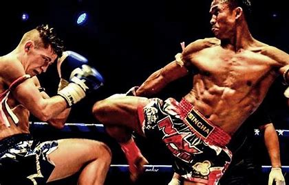
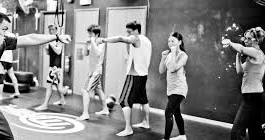
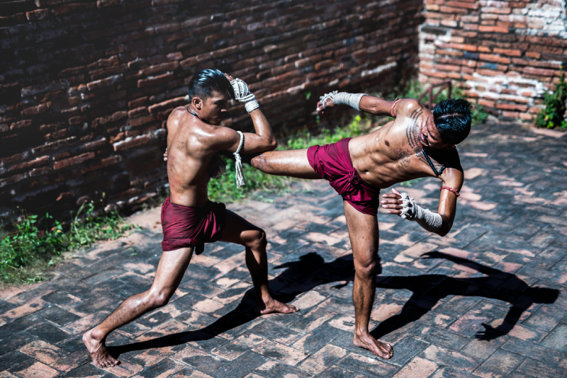
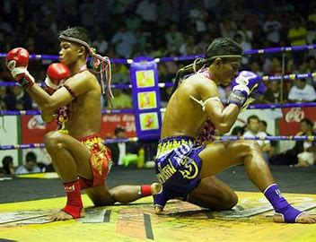
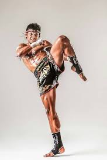
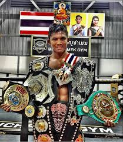
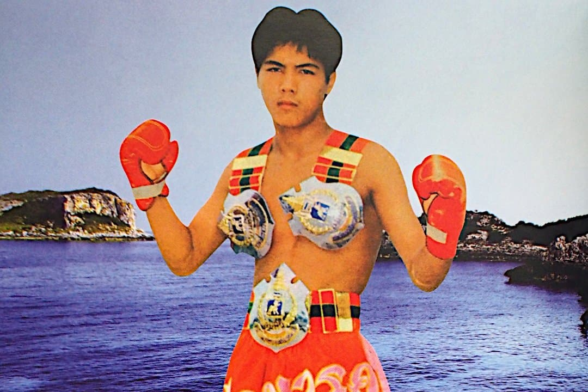
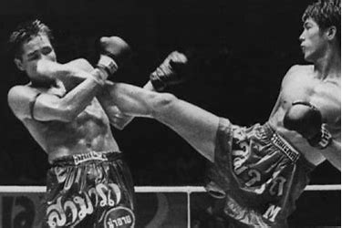
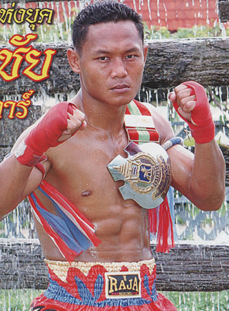
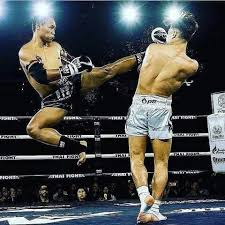

Muay Thai (Thai boxing) is a martial art and combat sport, which dates
back to the 13th century. Known as the “science of 8 limbs, it
incorporates strikes using the fists, knees, shins and elbows as well
as an element of grappling. Muay Thai techniques evolved for use on the battlefields
by ancient Thai warriors. With its roots in Thailand’s military, it
is now trained across the world and numerous organisations broadcast
Muay Thai ring fighting events to millions of fans globally. It’s also
a key component of MMA (Mixed Martial Arts) styles.

What are the benefits of Muay Thai training?
First of all, everyone can start training Muay Thai. It doesn't matter if you want to compete,
or just enjoy learning new skills and getting in the best shape of your life.
Muay Thai isn't just for improving your cardio. It's also much more than a full-body workout.
The skills that you learn in Muay Thai classes are also effective for self-defence.

The history of Muay Thai
Muaythai has been a part of Thai history and heritage for hundreds of
years, as with most traditions from ancient times. Many different
versions of the history of Muaythai exist, but all sources agree that
Muaythai was the primary and most effective method of self defence
used by Thai warriors on the battlefields of conflicts and wars that
occurred countless times throughout the history of the nation now
known as Thailand. During this time, a warfare manual named
“Chupasart” was written. This manual emphasised the martial uses of
each body part. The underlying philosophy of this manual implied that
fighting was more than the use of weapons, but most importantly,
should engage total commitment from mind, body and soul.

Traditions in Muay Thai
Wai Khru Ram Muay: This is a ceremonial dance that fighters
perform before the fight to show respect to their teachers,
ancestors, and gods. It also serves as a warm-up and a way to
display their skills and style.
Mongkon: This is a sacred headband that fighters wear before
the fight, which is believed to bring good luck and protection. It
is only handled by the fighter and the coach, and it is removed
before the fight starts.
Pra Jiad: This is a piece of cloth or rope that fighters tie
around their arms or waist, which also symbolizes good luck and
blessing from their family. Some fighters use a piece of their
mother’s dress for this purpose.
Sarama: This is the music that accompanies the fight, which
consists of four instruments: the Pi Java (clarinet), the Klong Kaak
(drums), the Ching (cymbals) and the Kong Mong (heavy drum). The
music matches the tempo and intensity of the fight, and it adds
excitement and atmosphere to the event.

(Two fighters dancing the Wai Khru Ram Muay.)
The Rules of Muay Thai
Traditional Fights are divided into five rounds, with each round
lasting three minutes
Weight classes are in place to ensure that fighters are evenly
matched
Illegal moves include groin strikes, headbutts, and biting
Referees can stop a fight if a fighter is in danger or unable to
defend themselves
A fighter can win by knockout, technical knockout, or decision
learn more about the rules:
The different styles of Muay Thai explained
Muay Femur
Description: Muay Femurs are technical fighters with a high
fight IQ. They excel in all Muay Thai techniques and weapons.
Key Traits: Versatility, movement, defense, and outscoring
opponents.
Muay Khao
Description:Muay Khaos rely heavily on knee strikes. They
excel in knee techniques delivered at various ranges.
Approach:Wear down opponents with clinching and score
points using knees to the body.
Muay Mat
Description:Aggressive and explosive style emphasizing
heavy punches and knockouts.
Approach: Relentless forward movement, trading blow for
blow.
Muay Tae
Description: Focused on powerful kicks, particularly
roundhouse kicks.
Goal: Land knockout blows by battering opponents with
shins.
Muay Bouk
Description: The most aggressive style, characterized by
relentless intensity.
Approach: Always at 100%, aiming for knockouts.
learn more about the styles:
The most iconic fighters in the history of Muay Thai
"Buakaw Banchamek"


(Fight Record: 241 wins, 24 losses, 14 draws)
Known for his fierce fighting style, Buakaw is a former two-time Omnoi Stadium champion, Lumpinee Stadium Toyota Marathon champion, former #1-ranked fighter in Lumpinee Stadium, Thailand Featherweight champion, two-time K-1 World MAX champion and 2011 & 2012 Thai Fight tournament champion. He is regarded as one of the greatest Muay Thai fighters ever.
"Samart Payakaroon"


(Fight Record:129 wins, 19 losses, 2 draws)
Samart Payakaroon is often hailed as one of the greatest Muay Thai
fighters of all time. He possessed an extremely high fight IQ,
lightning quick reflexes, and excellent ring vision. Samart also
fought using creative techniques that were effective and
unpredictable, even against elite competition in the 80s and 90s
(dubbed the Golden Age of Muay Thai). There were contests where
Samart was pushed past the brink of exhaustion, and still gave his
opponents the fight of their lives. Even in the period where Samart
was more concerned about his music and acting career, he defeated
some of the greatest fighters of his generation.
"Saenchai Sor. Kingstar"


(Fight Record: 317 wins, 41 losses, 6 draws)
Saenchai is a Thai kickboxer who is widely regarded as one of the
best Muay Thai fighters of all time, who is still active. He has won the Lumpinee Stadium
title, the most prestigious title in Muay Thai, in four different
weight divisions, while mostly fighting larger opponents. He is
known for his speed, agility, and unorthodox style of fighting,
which often includes risky and entertaining maneuvers. He has fought
in many countries and has won five King’s Cup titles with the Thai
Fight promotion12 He is also a trainer and mentor for many young
fighters, such as Tawanchai P.K. Saenchaimuaythaigym, who is the
number two pound-for-pound Muay Thai fighter in the world as of
December 2023 Saenchai is a legend and an inspiration for many Muay
Thai fans and practitioners around the world.